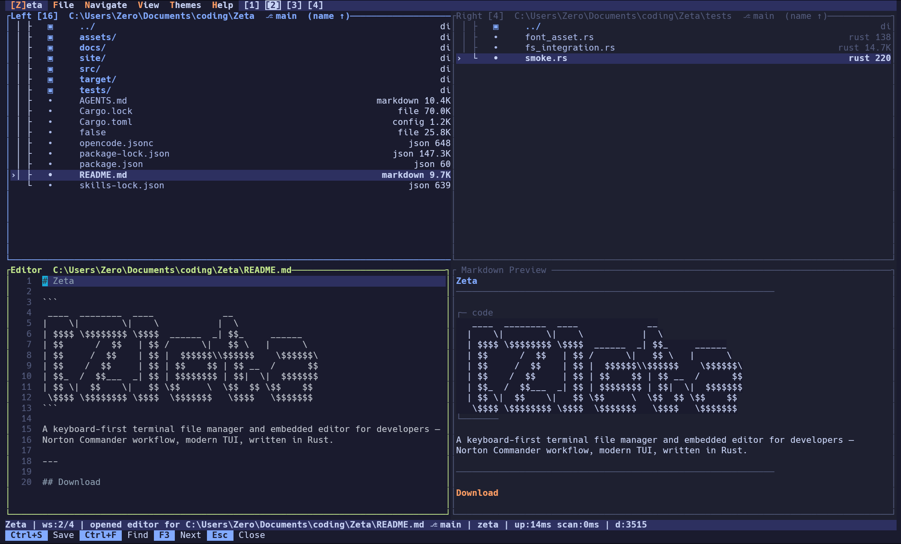

// terminal file manager
Norton Commander reimagined. Rust core. Zero bloat.
A dual-pane terminal file manager with an embedded editor, integrated terminal, SSH/SFTP, git awareness, archive browsing, workspaces, themes, and a command palette — all running in your terminal on a Rust core.
cargo install --git https://github.com/tzero86/Zeta
Work in progress — issues and feedback welcome.

// what's new
View all changed files and their diffs without leaving the terminal. Side-by-side coloured hunks with a line-number gutter, full keyboard navigation, and mouse scroll support.
Switch themes live from a nested flyout submenu under View — no config file editing, no restart. Navigate with arrow keys and preview themes without leaving the keyboard.
Authentic CGA/DOS palette — dark blue panels (#0000AA), bright cyan borders (#55FFFF), yellow key hints (#FFFF55). The real thing, not a loose approximation.
// features zeta --help
Two independent panels side by side. Navigate, compare, and operate across directories without a second terminal window. Navigation history with back/forward stacks.
Syntax highlighting, undo/redo, incremental search, text selection, find & replace. Edit files without spawning an external process. Ropey-backed for fast editing of large files.
Full PTY terminal embedded in the layout. Toggle with F2. All keys forwarded as raw escape sequences. Fullscreen mode. Stay in your filesystem context without context-switching.
Browse and operate on remote filesystems over SSH. Password, key file, and SSH agent auth. Host key verification with known-hosts persistence. Full remote file operations.
Live rendered preview side-by-side while editing .md files. Headings, code blocks, lists, blockquotes — updated on every keystroke, zero latency.
Four isolated desktops each with independent pane state, editor, preview, and terminal. Switch with Alt+1–4. Workspace state persists across sessions.
Highlight unique and changed entries between panes at a glance. Sync to the other pane with a single keystroke. Colour-coded: green (new), red (removed), yellow (changed).
Branch and dirty-state indicator in the pane header. Per-entry change markers — modified, added, untracked at a glance. Built-in diff viewer with side-by-side colour-coded hunks.
Click to focus panes, scroll to navigate, select entries, resize panels. Right-click for context menu. Mouse-friendly while keeping keyboard-first UX.
Enter ZIP, tar.gz, tar.bz2, and tar.xz archives to browse contents as a virtual filesystem. Extract single files for in-place preview. Navigate nested archives like directories.
Nested flyout submenus in the menu bar — hover or arrow-key into a submenu without losing focus. Theme switching, file ops, and navigation all accessible via Alt+letter.
Copy (F5), move (Shift+F6), rename (F6), delete (F8) with progress tracking, trash support, collision dialog, and batch operations on marked files. Resume on failure.
10 built-in themes (Zeta, Norton, Dracula, Catppuccin, Matrix, Neon, & more), keymap rebinding, 3 icon modes (Unicode, ASCII, Nerd Font), and a simple TOML config file.
Type / to filter entries by glob pattern. Ctrl+P opens a recursive fuzzy file finder that searches the entire directory tree. Instant, no indexing needed.
Shift+P opens a fuzzy-matched command palette with 40+ actions. Navigation, file ops, editor, view, settings — every action discoverable and a keystroke away.
Automatic update checks on startup (configurable). One-keystroke install on quit when a new version is available. Pins to tagged releases for reproducible builds.
Pane state, CWDs, sort modes, history, and workspace layout saved to session.toml. Pick up exactly where you left off. Non-fatal fallback on read errors.
Filesystem events auto-refresh pane contents when directories change. Config file changes trigger live reload of settings. No manual refresh needed.
// keyboard first
// prerequisites
Linux: build-essential pkg-config libssl-dev libbz2-dev liblzma-dev. Windows: VS Build Tools with "Desktop development with C++".
The embedded terminal uses the ConPTY API introduced in Windows 10 version 1809. Earlier Windows versions are not supported. (Windows only)
Precompiled binaries skip native build steps entirely — grab one from the releases page to avoid the C toolchain requirement.
// why it exists
Zeta started as an excuse. Testing a new generation of AI coding tools calls for a real project — something with actual architecture decisions, non-trivial state, and things that could genuinely go wrong. Toy examples tell you nothing.
The idea came from memory. If you used a PC in the late 80s or early 90s, you probably know Norton Commander. Two panes, function keys, everything a keystroke away. That mental model never really leaves you.
So the goal became building something in that spirit — keyboard-first, fast, dual-pane — but brought forward: embedded editor, integrated terminal, SSH support, multiple workspaces, all on a Rust core with a proper TUI.
Zeta is what came out of that. Part experiment, part nostalgia project, part something that turned out to be genuinely useful.
If Zeta saves you time or sparks something, consider buying me a coffee — it keeps the project moving.